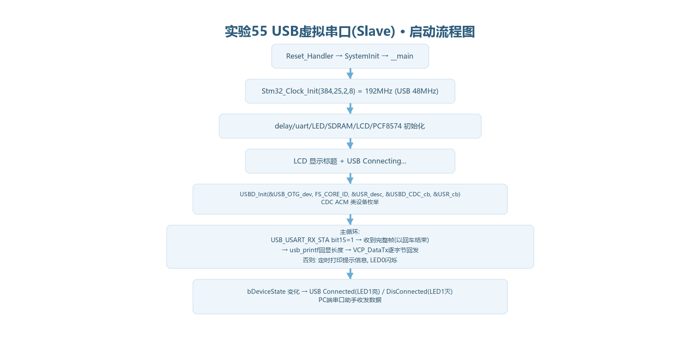
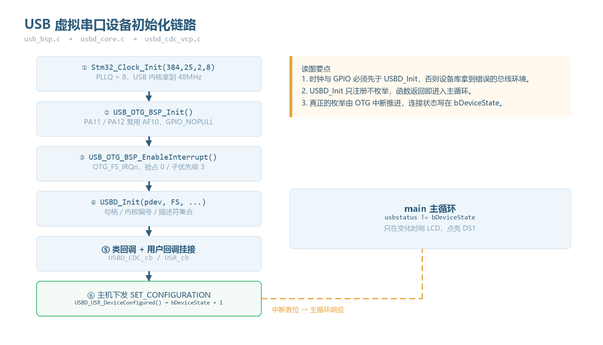
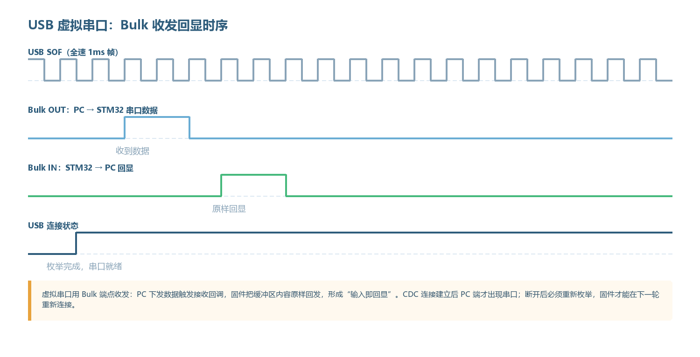
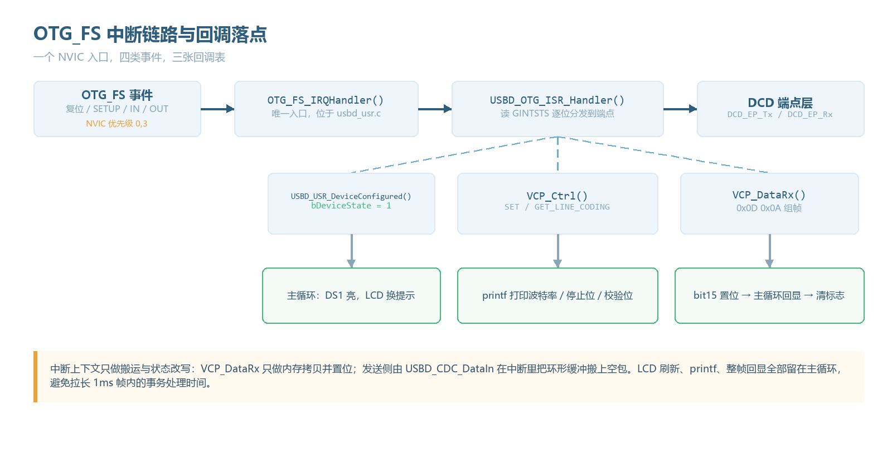
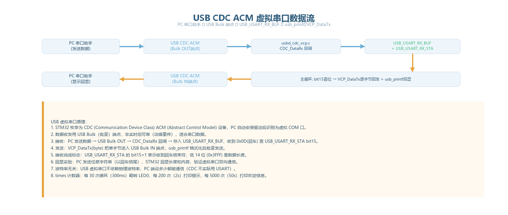

01 实验目标与硬件资源
让 STM32F429 的 OTG_FS 作为设备，被 PC 识别成一个串口，并完成收—回显
本实验把 STM32F429 的 USB OTG_FS 配置为全速设备，使用 USB CDC（Communication Device Class，通信设备类）的 ACM 子类，也就是常说的“虚拟串口”。STM32 侧只做两件事：把 PC 下发的字节收进缓冲区，遇到回车换行后整帧回显；以及周期性用 usb_printf 打印本机提示。PC 侧安装 ST 的虚拟串口驱动后，会多出一个 COM 口，用任意串口助手即可收发。
与相邻的 USB 实验（index67 读卡器 Slave、index68 声卡 Slave）相比，三者都是从机（Device），区别只在注册的设备类不同：读卡器挂 USBD_MSC_cb，声卡挂音频类回调，本实验挂 USBD_CDC_cb。因此启动流程、时钟、中断链路几乎一致，可以互相参照着看。
| 对比项 | 实验55 虚拟串口（本页） | 实验53 / 54 |
|---|---|---|
| USB 角色 | Device（从机） | Device（从机） |
| 设备类 | CDC / ACM，接口类 0x02、0x0A | MSC 0x08 / Audio 0x01 |
| 端点数据流 | 批量端点 IN/OUT 做数据，控制端点收 line coding | 批量端点读写扇区 / 等时端点送音频 |
| 主机侧现象 | 出现一个 COM 口 | 出现一个磁盘 / 一个声卡 |
引脚与片内资源
| 资源 | 引脚 / 参数 | 说明 |
|---|---|---|
| USB OTG_FS_DM | PA11，复用 AF10 | 全速差分负端，内部无上下拉 |
| USB OTG_FS_DP | PA12，复用 AF10 | 全速差分正端，设备侧靠它上拉表示接入 |
| USB 时钟 | 48MHz，来自 PLLQ | Stm32_Clock_Init(384,25,2,8) 时 USB 时钟 = 384/8 = 48MHz |
| 速率 | 全速 12Mbps | OTG_FS 内核，非高速 480Mbps |
| 调试串口 | USART1：PA9/PA10，115200-8-N-1 | printf 输出枚举与收发日志 |
| 状态指示 | DS1 / LED1 | USB 连接建立后点亮 |
| 运行指示 | DS0 / LED0 | 主循环里每 30 次翻转一次 |
PA11 → OTG_FS_DM
PA12 → OTG_FS_DP
AF10 → OTG_FS
PLLQ=8 → 48MHz
CDC 类 0x02/0x0A
OTG_FS_IRQn → 优先级 0,3
本实验的 USB 时钟不是独立晶振，而是 PLL 的 Q 分频输出。
Stm32_Clock_Init 的第 4 个参数一旦不是 8，USB 内核就拿不到准确的 48MHz，PC 侧会表现为“无法识别的设备”或枚举反复失败，而不是报错码。02 目录与文件分工
先认清哪些文件是“本实验新增”，哪些是公共底座，读代码才不会迷路
工程沿用正点原子的分层结构：USER 放 main 与中断入口，SYSTEM 是时钟/延时/串口底座，USB 分设备库与用户应用层，HARDWARE 是板级外设。虚拟串口的“业务”全部集中在 USB/USB_APP 下的三个文件里。
| 文件 | 职责 | 本页关注点 |
|---|---|---|
USER/main.c | 初始化外设、注册 USB 设备、主循环回显 | 初始化顺序、USBD_Init 的 5 个参数、连接状态轮询 |
USER/system_stm32f4xx.c | SystemInit：开 FPU、复位 RCC、设 SCB->VTOR | 为什么 main 之前就要把向量表指向 Flash |
SYSTEM/sys/sys.c | Stm32_Clock_Init：HSE→PLL→192MHz | PLLM/N/P/Q 四个参数如何落到寄存器 |
SYSTEM/delay/delay.c | SysTick 轮询式 delay_us/delay_ms | fac_us 与 192 的关系 |
SYSTEM/usart/usart.c | USART1 初始化、fputc 重定向、接收中断 | printf 为什么能直接出到串口 |
USB/USB_APP/usb_bsp.c | OTG 引脚、时钟、NVIC、us/ms 延时 | PA11/PA12 的 AF 配置与中断优先级 |
USB/USB_APP/usbd_cdc_vcp.c | CDC 类回调：line coding、发送环形缓冲、接收组帧 | VCP_DataTx / VCP_DataRx |
USB/USB_APP/usbd_desc.c | 设备/配置/字符串描述符集合 | VID/PID、接口类 0x02、端点地址 |
USB/USB_APP/usbd_usr.c | 用户回调 + OTG_FS_IRQHandler | 连接/断开如何改写 bDeviceState |
USB/STM32_USB_DEVICE_Library | USB 设备协议栈（Core + CDC 类） | 只读被调用函数，不修改 |
HARDWARE/PCF8574 | I2C 扩展 IO，板级电源/复位控制 | 本实验只做 PCF8574_Init |
CORE/startup_stm32f429xx.s | 栈堆定义、向量表、Reset_Handler | 栈 0x400、堆 0x200、弱符号中断 |
阅读顺序建议：
main.c → usb_bsp.c → usbd_usr.c → usbd_cdc_vcp.c。设备库内部的 usbd_core.c 只需在被调用处点进去看状态机，不必逐行通读。03 启动流程总览
从复位到进入 while(1)，九步初始化一步都不能少，顺序也有讲究

main 函数全文
int main(void)
{
u16 t;
u16 len;
u16 times=0;
u8 usbstatus=0;
Stm32_Clock_Init(384,25,2,8); // 设置时钟,192Mhz；PLLQ=8 同时给出 USB 48MHz
delay_init(192); // 初始化延时函数，fac_us=192
uart_init(115200); // 初始化USART1，printf 走这里
LED_Init(); // 初始化与LED连接的硬件接口
SDRAM_Init(); // 初始化SDRAM（LCD 显存）
LCD_Init(); // 初始化LCD
PCF8574_Init(); // 初始化PCF8574扩展IO
POINT_COLOR=RED;
LCD_ShowString(30,50,200,16,16,"Apollo STM32F4/F7");
// …省略 4 行 LCD 提示字符串（实验标题、日期、ATOM@ALIENTEK）…
LCD_ShowString(30,130,200,16,16,"USB Connecting...");// 提示USB开始连接
USBD_Init(&USB_OTG_dev,USB_OTG_FS_CORE_ID,&USR_desc,&USBD_CDC_cb,&USR_cb);
// 上电即注册设备：内核句柄 / 内核编号 / 描述符集合 / CDC 类回调 / 用户回调
while(1)
{
if(usbstatus!=bDeviceState)// USB连接状态发生了改变
{
usbstatus=bDeviceState;// 记录新的状态
if(usbstatus==1)
{
POINT_COLOR=BLUE;
LCD_ShowString(30,130,200,16,16,"USB Connected ");// 提示USB连接成功
LED1=0;// DS1亮
}else
{
POINT_COLOR=RED;
LCD_ShowString(30,130,200,16,16,"USB disConnected ");// 提示USB断开
LED1=1;// DS1灭
}
}
if(USB_USART_RX_STA&0x8000)
{
len=USB_USART_RX_STA&0x3FFF;// 得到此次接收到的数据长度
usb_printf("\r\n您发送的消息为:%d\r\n\r\n",len);
for(t=0;t<len;t++)
{
VCP_DataTx(USB_USART_RX_BUF[t]);// 以字节方式,发送给USB
}
usb_printf("\r\n\r\n");// 插入换行
USB_USART_RX_STA=0;
}else
{
times++;
if(times%5000==0)
{
usb_printf("\r\n阿波罗STM32F4/F7开发板USB虚拟串口实验\r\n");
usb_printf("正点原子@ALIENTEK\r\n\r\n");
}
if(times%200==0)usb_printf("请输入数据,以回车键结束\r\n");
if(times%30==0)LED0=!LED0;// 闪烁LED,提示系统正在运行
delay_ms(10);
}
}
}
关键逻辑说明
- 时钟必须最先配：
Stm32_Clock_Init把 HCLK 抬到 192MHz 并让 PLLQ 输出 48MHz，后面delay_init(192)的实参、SysTick 的计数倍率、USART 的波特率分频全部依赖这个结果。 - 延时先于串口：
delay_init配的是 SysTick，uart_init内部有等待稳定的过程，也用到 HAL 的时基；先建立时基再开外设是这套工程的固定习惯。 - SDRAM/LCD 在 USB 之前：USB 枚举与数据回调都在中断里跑，若 LCD 初始化放在后面，中断一旦触发就会调
LCD_ShowString访问未初始化的 FSMC，等于自找 HardFault。 USBD_Init不阻塞：它只做内核与类注册，真正的枚举由 OTG 中断推进，所以函数返回后主循环立刻开始跑，界面先显示“USB Connecting...”。- 连接状态靠轮询
bDeviceState：该变量由usbd_usr.c的USBD_USR_DeviceConfigured/DeviceDisconnected在中断上下文改写，主循环只读并比较，避免在中断里刷屏。 - 回显是“整帧”语义：只有
USB_USART_RX_STA的 bit15 置位才认为收完一帧，逐字节回显不会触发，这是与“收到什么回什么”的直觉最大的差别。
04 启动文件与向量表
栈只有 1KB、堆只有 512B，Reset_Handler 只做三件事，中断全是弱符号
; Amount of memory (in bytes) allocated for Stack Stack_Size EQU 0x400; ; 1KB 栈，主栈 MSP 从这里向下生长 AREA STACK, NOINIT, READWRITE, ALIGN=3 Stack_Mem SPACE Stack_Size __initial_sp ; 向量表第 0 项就是它的地址 Heap_Size EQU 0x200; ; 512B 堆，malloc 用 Reset_Handler PROC EXPORT Reset_Handler [WEAK] IMPORT SystemInit IMPORT __main LDR R0, =SystemInit BLX R0 ; 先跑 SystemInit（FPU/RCC/VTOR） LDR R0, =__main BX R0 ; 再进 C 库启动：拷贝 .data、清 .bss，最后调 main ENDP DCD OTG_FS_IRQHandler ; USB OTG FS EXPORT OTG_FS_IRQHandler [WEAK] ; 弱定义，C 文件里同名函数即可覆盖 OTG_FS_IRQHandler B .
关键逻辑说明
- 栈 0x400 是硬约束：USB 中断里会调用
USBD_OTG_ISR_Handler，再往下走描述符解析与用户回调，调用层次深；如果自己往中断里加大量局部数组，1KB 很快就不够，表现为随机 HardFault。 - 堆 0x200 只够轻量分配：设备库里有少量
malloc需求，本实验主要靠静态数组（APP_Rx_Buffer2048 字节是静态的），所以 512B 够用。 Reset_Handler的顺序不可交换：SystemInit必须在__main之前，因为__main会初始化 RAM 段并最终跳到main，而SystemInit里已经把向量表偏移设好。- 弱符号是“可覆盖的默认实现”：startup 里给每个中断都写了一个
B .死循环的弱函数，防止未实现时跑飞；usbd_usr.c里定义了同名的OTG_FS_IRQHandler，链接时以强符号为准。 - 向量表偏移在
SystemInit里设置：SCB->VTOR = FLASH_BASE | VECT_TAB_OFFSET，本工程宏未改，因此就是 0x08000000 起始。
05 SystemInit 与 HAL_Init
main 之前开 FPU、复位时钟寄存器；main 第一行建立时基与优先级分组
void SystemInit(void)
{
/* FPU settings ------------------------------------------------------------*/
#if (__FPU_PRESENT == 1) && (__FPU_USED == 1)
SCB->CPACR |= ((3UL << 10*2)|(3UL << 11*2)); /* CP10/CP11 全权限，否则浮点指令进 UsageFault */
#endif
RCC->CR |= (uint32_t)0x00000001; /* 打开 HSI，保证复位后有时钟可用 */
RCC->CFGR = 0x00000000; /* 清 CFGR：SW=HSI，各分频复位 */
RCC->CR &= (uint32_t)0xFEF6FFFF; /* 关 HSEON/CSSON/PLLON */
RCC->PLLCFGR = 0x24003010; /* PLLCFGR 复位值 */
RCC->CR &= (uint32_t)0xFFFBFFFF; /* 清 HSEBYP */
RCC->CIR = 0x00000000; /* 关全部 RCC 中断 */
SCB->VTOR = FLASH_BASE | VECT_TAB_OFFSET; /* 向量表放内部 Flash */
}
HAL_StatusTypeDef HAL_Init(void)
{
__HAL_FLASH_INSTRUCTION_CACHE_ENABLE(); // 指令 Cache
__HAL_FLASH_DATA_CACHE_ENABLE(); // 数据 Cache
__HAL_FLASH_PREFETCH_BUFFER_ENABLE(); // 预取，192MHz 下必需
HAL_NVIC_SetPriorityGrouping(NVIC_PRIORITYGROUP_2);// 本工程用分组 2：2 位抢占 + 2 位子优先级
HAL_InitTick(TICK_INT_PRIORITY); // TICK_INT_PRIORITY=0x0F，1ms 时基
HAL_MspInit(); // 板级底层（本工程为空实现）
return HAL_OK;
}
关键逻辑说明
- FPU 必须在这里开：F429 带单精度 FPU，编译器若生成
VMOV而 CPACR 没放开 CP10/CP11，第一次浮点运算就进 UsageFault；SystemInit是唯一早于所有 C 代码的 C 函数。 - 复位 RCC 是“回到已知态”：调试器热复位、看门狗复位都不会清 RCC 寄存器，先把 PLL/分频恢复默认，
Stm32_Clock_Init才有确定的起点。 - 优先级分组是 2 而不是 4：分组 2 表示 4 位优先级里高 2 位是抢占优先级，所以后面
OTG_FS_IRQn的(0,3)、USART1_IRQn的(3,3)才能生效；改成 GROUP_4 会让子优先级失效。 - HAL_InitTick 用 SysTick：它把
SystemCoreClock/1000写入 LOAD 并开中断，HAL_Delay与HAL_GetTick从此有 1ms 分辨率；而delay_us是另一套轮询实现，两者互不干扰。 - TICK_INT_PRIORITY=0x0F 是最低优先级：时基中断可以被 USB、串口打断，避免在中断里等 tick 造成实时性抖动。
06 时钟树与 SysTick 时基
HSE 25MHz → PLL → 192MHz，同时 PLLQ 必须给出 48MHz 给 USB
void Stm32_Clock_Init(u32 plln,u32 pllm,u32 pllp,u32 pllq)
{
HAL_StatusTypeDef ret = HAL_OK;
RCC_OscInitTypeDef RCC_OscInitStructure;
RCC_ClkInitTypeDef RCC_ClkInitStructure;
__HAL_RCC_PWR_CLK_ENABLE(); // 使能PWR时钟
__HAL_PWR_VOLTAGESCALING_CONFIG(PWR_REGULATOR_VOLTAGE_SCALE1);// 电压调节器 Scale1，192MHz 必需
RCC_OscInitStructure.OscillatorType=RCC_OSCILLATORTYPE_HSE;// 时钟源为HSE
RCC_OscInitStructure.HSEState=RCC_HSE_ON; // 开HSE（板上 25MHz）
RCC_OscInitStructure.PLL.PLLState=RCC_PLL_ON; // 开PLL
RCC_OscInitStructure.PLL.PLLSource=RCC_PLLSOURCE_HSE; // PLL时钟源选HSE
RCC_OscInitStructure.PLL.PLLM=pllm; // 25 → 1MHz 鉴相频率
RCC_OscInitStructure.PLL.PLLN=plln; // 1MHz × 384 = 384MHz VCO
RCC_OscInitStructure.PLL.PLLP=pllp; // 384 / 2 = 192MHz SYSCLK
RCC_OscInitStructure.PLL.PLLQ=pllq; // 384 / 8 = 48MHz 给 USB/SDIO
ret=HAL_RCC_OscConfig(&RCC_OscInitStructure);
if(ret!=HAL_OK) while(1);
ret=HAL_PWREx_EnableOverDrive(); // 开Over-Drive，否则 192MHz 不稳
if(ret!=HAL_OK) while(1);
RCC_ClkInitStructure.ClockType=(RCC_CLOCKTYPE_SYSCLK|RCC_CLOCKTYPE_HCLK|RCC_CLOCKTYPE_PCLK1|RCC_CLOCKTYPE_PCLK2);
RCC_ClkInitStructure.SYSCLKSource=RCC_SYSCLKSOURCE_PLLCLK;// 系统时钟源=PLL
RCC_ClkInitStructure.AHBCLKDivider=RCC_SYSCLK_DIV1; // HCLK=192MHz
RCC_ClkInitStructure.APB1CLKDivider=RCC_HCLK_DIV4; // PCLK1=48MHz
RCC_ClkInitStructure.APB2CLKDivider=RCC_HCLK_DIV2; // PCLK2=96MHz
ret=HAL_RCC_ClockConfig(&RCC_ClkInitStructure,FLASH_LATENCY_5);// 5WS，对应 180~192MHz 档
if(ret!=HAL_OK) while(1);
}
| 节点 | 算式 | 结果 |
|---|---|---|
| PLL 输入 | HSE 25MHz / PLLM 25 | 1MHz |
| VCO | 1MHz × PLLN 384 | 384MHz |
| SYSCLK | 384MHz / PLLP 2 | 192MHz |
| HCLK / AHB | 192MHz / DIV1 | 192MHz |
| PCLK1 / APB1 | 192MHz / DIV4 | 48MHz |
| PCLK2 / APB2 | 192MHz / DIV2 | 96MHz |
| USB / SDIO | 384MHz / PLLQ 8 | 48MHz |
void delay_init(u8 SYSCLK)
{
HAL_SYSTICK_CLKSourceConfig(SYSTICK_CLKSOURCE_HCLK);// SysTick 时钟 = HCLK（非 HCLK/8）
fac_us=SYSCLK; // fac_us=192：1us 需要 192 个 HCLK 节拍
}
void delay_us(u32 nus)
{
u32 ticks;
u32 told,tnow,tcnt=0;
u32 reload=SysTick->LOAD; // 当前重装值
ticks=nus*fac_us; // 需要的节拍数
told=SysTick->VAL; // 进入时的递减计数器值
while(1)
{
tnow=SysTick->VAL;
if(tnow!=told)
{
if(tnow<told)tcnt+=told-tnow;// 递减计数：正常段
else tcnt+=reload-tnow+told;// 跨过重装点，补一圈
told=tnow;
if(tcnt>=ticks)break;// 到点退出
}
}
}
关键逻辑说明
- 为什么是 384/25/2/8：板上 HSE 是 25MHz，先用 25 分频得到 1MHz 鉴相频率（PLL 推荐范围 1~2MHz，也是唯一能整除得到 48MHz 的整数方案），再 384 倍频、2 分频得 192MHz、8 分频得 48MHz。
- PLLQ 直接决定 USB 能否工作：OTG_FS 要求 48MHz±0.25%，只有 PLLQ=8 满足；改成 7 或 9 后 USB 时钟变成 54.9/42.7MHz，PC 侧必然枚举失败。
- FLASH_LATENCY_5 与 OverDrive：192MHz 属于 F429 的超频档（标称 180MHz），必须同时开 OverDrive 并把 Flash 等待周期设为 5WS，否则取指错误会表现为随机死机。
- APB1 不能超过 45MHz：192/4=48MHz 已经略高于 45MHz 的常规上限，这是正点原子在 192MHz 方案下的既定取舍；若改为 180MHz，PCLK1 是 45MHz。
delay_us是纯轮询：不依赖中断，因此在中断里也能安全调用；reload只读一次，若在延时过程中 SysTick 被重新配置，计数会失准，所以不要在delay_us期间改 SysTick。- SysTick 与 HAL 时基共用：
delay_init只改时钟源与倍率，不重装 LOAD；LOAD 由HAL_InitTick设为 1ms，因此轮询延时不会打断 HAL 的 tick 计数。
07 USB 设备初始化
两脚复用、一路时钟、一个中断，再把手柄挂到设备库上

底层：usb_bsp.c
void USB_OTG_BSP_Init(USB_OTG_CORE_HANDLE *pdev)
{
GPIO_InitTypeDef GPIO_InitStruct;
__HAL_RCC_GPIOA_CLK_ENABLE(); // 使能GPIOA时钟
__HAL_RCC_USB_OTG_FS_CLK_ENABLE(); // 使能OTG FS时钟（48MHz 域）
GPIO_InitStruct.Pin=GPIO_PIN_11|GPIO_PIN_12; // PA11 DM / PA12 DP
GPIO_InitStruct.Mode=GPIO_MODE_AF_PP; // 复用推挽
GPIO_InitStruct.Pull=GPIO_NOPULL; // 无上下拉：USB 收发器内部已处理
GPIO_InitStruct.Speed=GPIO_SPEED_HIGH; // 高速档，保证 12Mbps 边沿
GPIO_InitStruct.Alternate=GPIO_AF10_OTG_FS; // 复用功能 AF10
HAL_GPIO_Init(GPIOA, &GPIO_InitStruct);
}
void USB_OTG_BSP_EnableInterrupt(USB_OTG_CORE_HANDLE *pdev)
{
HAL_NVIC_SetPriority(OTG_FS_IRQn,0,3); // 抢占0，子优先级3：最高抢占级
HAL_NVIC_EnableIRQ(OTG_FS_IRQn); // 使能OTG USB FS中断
}
void USB_OTG_BSP_uDelay (const uint32_t usec){ delay_us(usec); }// 官方用 TIM2，本工程复用 delay.c
void USB_OTG_BSP_mDelay (const uint32_t msec){ delay_ms(msec); }
上层：main.c 中的注册
USBD_Init(&USB_OTG_dev, // USB_OTG_CORE_HANDLE：内核句柄，保存寄存器基址与端点状态 USB_OTG_FS_CORE_ID, // 选择 FS 内核（全速） &USR_desc, // 设备/配置/字符串描述符集合（usbd_desc.c） &USBD_CDC_cb, // CDC 类回调：Init/DeInit/Setup/DataIn/DataOut &USR_cb); // 用户回调：Reset/Configured/Suspended/...
关键逻辑说明
- PA11/PA12 不能再做普通 IO：一旦设为
GPIO_MODE_AF_PP+AF10，引脚就交给 OTG 内核；此时用万用表量 DP 会看到设备侧上拉（由内核控制），这是 PC 认出“有设备插入”的电气前提。 - 不要加外部上下拉配置：
GPIO_NOPULL是刻意的，USB 全速要求 DP 上拉 1.5kΩ 到 3.3V、DM/DP 串联 22Ω，这些都在板级电路上，GPIO 内部上下拉反而破坏阻抗。 - 中断优先级给到最高抢占级：USB 是 1ms 一个帧、每帧多个事务的硬实时协议，慢一步就丢包；
(0,3)保证它不被串口、按键打断。 USB_OTG_BSP_uDelay直接复用delay_us：设备库在复位、设地址等时序里要求 μs 级等待；本工程没有另开 TIM2，说明delay_us的精度已足够（192 节拍/μs，误差在协议容忍范围内）。- 5 个参数各司其职：句柄是“状态容器”，CORE_ID 选内核，后三个是“三张表”——描述符表告诉主机我是什么设备，类回调表决定标准请求怎么应答，用户回调表把连接事件抛给应用层。
08 USB 批量端点时序与数据流
主机每 1ms 发一个 IN 令牌，设备把环形缓冲里的字节搬上空包；OUT 方向按 0x0D 0x0A 组帧

发送：写环形缓冲，由 DataIn 回调搬走
uint16_t VCP_DataTx (uint8_t data)
{
APP_Rx_Buffer[APP_Rx_ptr_in]=data; // 写入发送buf（2048 字节静态数组）
APP_Rx_ptr_in++; // 写位置加1
if(APP_Rx_ptr_in==APP_RX_DATA_SIZE) // 到缓冲区大小，回卷
{
APP_Rx_ptr_in = 0;
}
return USBD_OK;
}
接收：逐字节判断 0x0D / 0x0A，凑齐一帧才置位
uint16_t VCP_DataRx (uint8_t* Buf, uint32_t Len)
{
u8 i;
u8 res;
for(i=0;i<Len;i++)
{
res=Buf[i];
if((USB_USART_RX_STA&0x8000)==0) // 上一帧未完成才继续收
{
if(USB_USART_RX_STA&0x4000) // 已经收到 0x0D
{
if(res!=0x0a)USB_USART_RX_STA=0;// 不是 0x0A：判为噪声，重新开始
else USB_USART_RX_STA|=0x8000; // 收到 0x0A，整帧完成
}else // 还没收到 0x0D
{
if(res==0x0d)USB_USART_RX_STA|=0x4000;
else
{
USB_USART_RX_BUF[USB_USART_RX_STA&0X3FFF]=res;// 存入数据区
USB_USART_RX_STA++;
if(USB_USART_RX_STA>(USB_USART_REC_LEN-1))USB_USART_RX_STA=0;// 溢出则丢弃重来
}
}
}
}
return USBD_OK;
}
关键逻辑说明
- 发送是“生产者—消费者”：
VCP_DataTx只写指针，不碰硬件；真正的打包由USBD_CDC_DataIn在中断里比对APP_Rx_ptr_in/out后调用DCD_EP_Tx完成，因此主循环刷屏不会阻塞。 - 2048 字节缓冲是速率约束：
usbd_conf.h的注释给出APP_RX_DATA_SIZE*8/MAX_BAUDARATE*1000 > CDC_IN_FRAME_INTERVAL*8，按全速 12Mbps 折算，2KB 足以撑过 1ms 的 IN 帧间隔，不会因为主机取数慢而丢字符。 - 0x4000 与 0x8000 是两级状态：bit14 记“已见回车”，bit15 记“整帧完成”，bit13~0 存长度；
USB_USART_RX_STA同时充当计数器与标志寄存器，这是正点原子串口实验的通用写法。 - 只认 CRLF：串口助手若只发
\n（0x0A）或不发结束符，设备永远不置 bit15，主循环就不会回显——这不是丢数据，而是协议要求未被满足。 - 溢出保护是“清零重来”：超过
USB_USART_REC_LEN-1（199）字节即把状态清零，宁可丢整帧也不越界写USB_USART_RX_BUF，避免踩坏相邻变量。 - 数据方向决定端点：设备→PC 走 IN 端点（0x81 类），PC→设备走 OUT 端点（0x01 类），批量传输本身有重传与握手，应用层不需要做校验。
09 OTG_FS 中断链路
一个中断入口，统一分发到复位、枚举、类请求、数据收发四类事件

| 触发源 | 控制器 / 寄存器 | NVIC 中断号与优先级 | ISR | 用户回调 |
|---|---|---|---|---|
| USB 复位 / 枚举完成 | OTG_FS_GINTSTS.USBRST / ENUMDNE | OTG_FS_IRQn，抢占 0、子 3 | OTG_FS_IRQHandler | USBD_USR_DeviceReset / DeviceConfigured |
| SETUP 包到达 | OTG_FS_DOEPINT.SETUP | 同上 | 同上 | VCP_Ctrl（类请求） |
| OUT 端点收到数据 | OTG_FS_DOEPINT.XFERCOMPL | 同上 | 同上 | VCP_DataRx |
| IN 端点发送完成 | OTG_FS_DIEPINT.XFERCOMPL | 同上 | 同上 | USBD_CDC_DataIn（内部） |
| 挂起 / 唤醒 | OTG_FS_GINTSTS.ESUSP / WKUPINT | 同上 | 同上 | USBD_USR_DeviceSuspended / Resumed |
void OTG_FS_IRQHandler(void)
{
USBD_OTG_ISR_Handler(&USB_OTG_dev); // 整个 USB 协议栈只有一个中断入口
}
void USBD_USR_DeviceConfigured (void)
{
bDeviceState=1; // 配置完成 → 主循环据此点灯/改提示
printf("MSC Interface started.\r\n"); // 原文如此：CDC 工程也沿用了这句打印
}
void USBD_USR_DeviceDisconnected (void)
{
bDeviceState=0; // 拔出后清连接标志
printf("USB Device Disconnected.\r\n");
}
关键逻辑说明
- 只有一个入口：OTG_FS 把所有端点事件合并成一个中断，设备库用
GINTSTS逐位判断后分发；因此“中断优先级”只需配一次，不存在每个端点单独配 NVIC 的说法。 - ISR 里绝不做耗时操作：
USBD_OTG_ISR_Handler只搬运数据、改状态机，VCP_DataRx也只是内存拷贝；回显与 LCD 刷新全部留给主循环。 bDeviceState是中断与主循环的唯一契约：写方在中断上下文，读方在主循环，单字节写天然原子，不需要临界区；但要求主循环只做“比较—反应”，不要反向写。- 挂起不等于拔出：总线空闲 3ms 进入 Suspend，
USBD_USR_DeviceSuspended也会把bDeviceState清 0，此时 DS1 熄灭是正常现象，PC 一发数据就会唤醒。 - 复位回调先于枚举：
USBD_USR_DeviceReset带speed参数（0 高速 / 1 全速），本实验打印 FS，说明 OTG_FS 内核按全速工作。
10 主循环与现象
主循环只做两件事：跟踪连接状态、把收到的整帧回显
while(1)
{
if(usbstatus!=bDeviceState) // 只在状态变化时刷屏，避免每圈都写 LCD
{
usbstatus=bDeviceState;
if(usbstatus==1)
{
POINT_COLOR=BLUE;
LCD_ShowString(30,130,200,16,16,"USB Connected ");
LED1=0; // DS1亮：PC 已完成配置
}else
{
POINT_COLOR=RED;
LCD_ShowString(30,130,200,16,16,"USB disConnected ");
LED1=1; // DS1灭
}
}
if(USB_USART_RX_STA&0x8000) // 收到一整帧（以 CRLF 结尾）
{
len=USB_USART_RX_STA&0x3FFF; // 取出长度
usb_printf("\r\n您发送的消息为:%d\r\n\r\n",len);
for(t=0;t<len;t++)
{
VCP_DataTx(USB_USART_RX_BUF[t]);// 逐字节回灌 IN 缓冲
}
usb_printf("\r\n\r\n");
USB_USART_RX_STA=0; // 清标志，准备下一帧
}else
{
times++; // 空闲节拍计数，做非阻塞分频
if(times%5000==0)
{
usb_printf("\r\n阿波罗STM32F4/F7开发板USB虚拟串口实验\r\n");
usb_printf("正点原子@ALIENTEK\r\n\r\n");
}
if(times%200==0)usb_printf("请输入数据,以回车键结束\r\n");
if(times%30==0)LED0=!LED0; // DS0 闪烁：系统在跑
delay_ms(10); // 10ms 一拍，决定闪烁与提示节奏
}
}
| PC 侧操作 | 板上现象 | 串口/虚拟串口现象 |
|---|---|---|
| USB 线插入 PC | LCD 由 “USB Connecting...” 变 “USB Connected”，DS1 常亮 | 设备管理器出现新 COM 口 |
| 打开该 COM 口 | DS0 继续 300ms 级闪烁 | 无额外输出（打开端口不触发枚举） |
发送 abc + 回车 | 无变化 | 先回 “您发送的消息为:3”，再回 abc |
| 发送数据但不发回车 | 无变化 | 设备不回显（未凑齐 CRLF） |
| 等待约 50s 不发数据 | 无变化 | 收到“请输入数据,以回车键结束”周期提示 |
| 拔出 USB | LCD 显示 “USB disConnected”，DS1 灭 | COM 口从设备管理器消失 |
关键逻辑说明
- 状态变化才刷 LCD：
usbstatus是主循环自己的影子变量，与中断里的bDeviceState比较；这既减少 FSMC 写次数，也避免每 10ms 重绘造成闪烁。 - 回显不会“边收边发”：收到整帧后一次性
VCP_DataTx，此时USB_USART_RX_STA仍是旧值，若期间又来新数据，VCP_DataRx会因为 bit15 已置位而丢弃——这是“先处理完再收下一帧”的隐式流控。 times是 16 位计数器：u16在 10ms 节拍下约 655s 回绕；%5000、%200、%30三个分频分别对应 50s、2s、300ms，回绕时节奏会短暂错位，不影响功能。- else 分支里才延时：收帧时不做
delay_ms(10)，等于突发回显优先；代价是回显期间 DS0 暂停闪烁，这是可接受的。 - DS1 与 COM 口不是同一件事：DS1 只看
bDeviceState（配置完成），而 PC 侧 COM 口还依赖 INF 驱动；灯亮但没 COM 口，说明是主机驱动问题而非设备问题。
11 USB CDC 描述符与环形缓冲
描述符决定“我是什么”，缓冲与 fops 决定“数据怎么进出”

/* usbd_desc.c：设备描述符（节选） */
__ALIGN_BEGIN uint8_t USBD_DeviceDesc[USB_SIZ_DEVICE_DESC] __ALIGN_END =
{
0x12, /* bLength：18 字节 */
USB_DESC_TYPE_DEVICE, /* bDescriptorType = 0x01 */
0x00, 0x02, /* bcdUSB = 2.00 */
0x02, /* bDeviceClass = CDC */
0x00, /* bDeviceSubClass */
0x00, /* bDeviceProtocol */
0x40, /* bMaxPacketSize0 = 64：EP0 最大包 */
/* …VID / PID / bcdDevice / iManufacturer / iProduct / iSerial / bNumConfigurations… */
};
/* usbd_cdc_vcp.c：CDC 类回调表 */
USBD_Class_cb_TypeDef USBD_CDC_cb =
{
VCP_Init, // 类初始化：准备端点/缓冲
VCP_DeInit, // 类反初始化
VCP_Ctrl, // 处理 SET_LINE_CODING / GET_LINE_CODING 等类请求
VCP_DataTx, // 应用层写 IN 缓冲
VCP_DataRx, // OUT 数据到达 → 组帧
/* …省略：SOF、GetCfgDesc、GetDeviceQualifierDesc 等成员… */
};
/* 描述符集合：告诉设备库三张表在哪 */
USBD_DEVICE USR_desc =
{
USBD_DeviceDesc, // 设备描述符
USB_SIZ_DEVICE_DESC,
USBD_ConfigDesc, // 配置描述符（含接口/端点）
USB_SIZ_CONFIG_DESC,
USBD_StringSerial, // 序列号字符串
USBD_StringLangID, // 语言 ID
USBD_Strings, // 厂商/产品字符串数组
USBD_StrDesc // 字符串描述符缓冲
};
关键逻辑说明
- 描述符是枚举的“契约文本”：主机先读 8 字节拿
bMaxPacketSize0，再读全 18 字节，然后读配置描述符；任何长度字段与实际字节数不一致，主机都会停在“未知设备”。 - VID/PID 决定驱动匹配：Windows 靠 VID/PID 找 INF，本工程沿用 ST 的 CDC 示例 ID，所以装 ST 虚拟串口驱动即可；改 ID 却不改 INF，就会变成黄色感叹号。
- 接口类 0x02 + 子类 0x02 + 协议 0x01 才是 ACM：设备描述符的
bDeviceClass=0x02只是声明“这是通信设备”，真正让系统加载 CDC ACM 的是接口描述符里的这三元组。 - 环形缓冲是单生产者单消费者：
APP_Rx_ptr_in只在VCP_DataTx（主循环）改，APP_Rx_ptr_out只在USBD_CDC_DataIn（中断）改，因此不需要关中断保护。 VCP_Ctrl的 line coding 只“记录不回用”：USB 虚拟串口的波特率是名义值，实际传输由 USB 全速帧决定；工程仍把 PC 下发的 7 字节参数解析并 printf 出来，用于验证控制通道是否通。- 三个结构体分工：
USBD_DEVICE管描述符，USBD_Class_cb_TypeDef管协议行为，USBD_Usr_cb_TypeDef管应用事件，互不越界。
12 串口调试与日志
USART1 是“调试口”，虚拟串口是“业务口”，两条通道彼此独立
void uart_init(u32 bound)
{
UART1_Handler.Instance=USART1; // USART1
UART1_Handler.Init.BaudRate=bound; // 波特率 115200
UART1_Handler.Init.WordLength=UART_WORDLENGTH_8B; // 8 位数据
UART1_Handler.Init.StopBits=UART_STOPBITS_1; // 1 位停止
UART1_Handler.Init.Parity=UART_PARITY_NONE; // 无校验
UART1_Handler.Init.HwFlowCtl=UART_HWCONTROL_NONE; // 无硬件流控
UART1_Handler.Init.Mode=UART_MODE_TX_RX; // 收发模式
HAL_UART_Init(&UART1_Handler); // 内部会调 HAL_UART_MspInit
}
void HAL_UART_MspInit(UART_HandleTypeDef *huart)
{
if(huart->Instance==USART1)
{
__HAL_RCC_GPIOA_CLK_ENABLE(); // 使能GPIOA时钟
__HAL_RCC_USART1_CLK_ENABLE(); // 使能USART1时钟
GPIO_Initure.Pin=GPIO_PIN_9; // PA9 = TX
GPIO_Initure.Mode=GPIO_MODE_AF_PP; // 复用推挽
GPIO_Initure.Pull=GPIO_PULLUP; // 上拉
GPIO_Initure.Speed=GPIO_SPEED_FAST; // 高速
GPIO_Initure.Alternate=GPIO_AF7_USART1; // AF7
HAL_GPIO_Init(GPIOA,&GPIO_Initure);
GPIO_Initure.Pin=GPIO_PIN_10; // PA10 = RX
HAL_GPIO_Init(GPIOA,&GPIO_Initure);
__HAL_UART_DISABLE_IT(huart,UART_IT_TC);
#if EN_USART1_RX
__HAL_UART_ENABLE_IT(huart,UART_IT_RXNE);// 开接收中断
HAL_NVIC_EnableIRQ(USART1_IRQn);
HAL_NVIC_SetPriority(USART1_IRQn,3,3); // 抢占3，子3：低于 USB
#endif
}
}
int fputc(int ch, FILE *f)
{
while((USART1->SR&0X40)==0); // 等 TXE（发送数据寄存器空）
USART1->DR = (u8) ch; // 写 DR，硬件自动移位输出
return ch;
}
void usb_printf(char* fmt,...)
{
u16 i,j;
va_list ap;
va_start(ap,fmt);
vsprintf((char*)USART_PRINTF_Buffer,fmt,ap);// 先格式化到 200 字节缓冲
va_end(ap);
i=strlen((const char*)USART_PRINTF_Buffer);// 本次长度
for(j=0;j<i;j++) // 逐字节写 USB IN 环缓
{
VCP_DataTx(USART_PRINTF_Buffer[j]);
}
}
关键逻辑说明
- printf 走 USART1，不经过 USB：
fputc直接轮询SR.TXE后写DR，因此枚举失败时仍能看到USBD_USR_DeviceReset的打印，这是排障的主通道。 usb_printf是另一条通道：它格式化到静态USART_PRINTF_Buffer，再逐字节进 USB 环形缓冲，所以 PC 上“虚拟串口”看到的是业务回显，调试串口看到的是协议栈日志。- 两者共用 vsprintf：都受同一份
stdio支持，%d、%s行为一致；但 USB 侧一次不要超过 200 字节，否则USART_PRINTF_Buffer会截断。 - USART 优先级低于 USB：
(3,3)对(0,3)，USB 事务永远优先；调试打印量过大时会丢字符，但不会破坏 USB 时序。 fputc是阻塞式：115200 波特率下 1 字节约 87μs，如果在 USB 中断里 printf，会严重拉长中断；工程里只在初始化与主循环打印，正是这个原因。EN_USART1_RX控制接收中断是否编译：本实验不依赖串口收命令，但仍保留接收中断与USART_RX_STA组帧逻辑，方便做串口命令行实验。
13 关键逻辑复盘与排查
虚拟串口出问题，九成落在时钟、描述符、驱动、组帧四处
| 现象 | 原因 | 排查 |
|---|---|---|
| PC 提示“无法识别的 USB 设备” | PLLQ 不是 8，USB 内核没有 48MHz | 量 PA12 是否有 1.5kΩ 上拉；确认 Stm32_Clock_Init 第 4 参为 8 |
| 枚举到一半失败，串口打印复位但无配置完成 | 描述符长度字段与实际不符，或 wTotalLength 超缓冲 | 看 USBD_USR_DeviceReset 后是否还有 DeviceConfigured；用 USB 抓包核对 18/9 字节 |
| 设备管理器有未知设备，装驱动后才有 COM 口 | VID/PID 与 INF 不匹配 | 核对 USBD_DeviceDesc 的 idVendor/idProduct，安装对应 ST 虚拟串口驱动 |
| 串口能打开但发数据无回显 | 未发 0x0D 0x0A，bit15 永不置位 | 串口助手勾选“发送新行”；或在 VCP_DataRx 断点看 USB_USART_RX_STA |
| 回显只有前半段，后面丢字符 | 一次发送超过 199 字节，状态被清零重来 | 分包发送；或增大 USB_USART_REC_LEN 并同步缓冲 |
| 拔插几次后 PC 不再识别 | 只改了 bDeviceState，OTG 内核状态未复位 | 断电重插；检查是否有 DeviceDisconnected 打印 |
| DS1 亮但没有 COM 口 | 设备侧配置完成，主机侧驱动缺失 | 看设备管理器是否有带感叹号的 CDC 设备 |
复盘要点
- 先电源与时钟，再协议：USB 不工作时，第一件事是确认 48MHz 与 DP 上拉，而不是怀疑描述符；时钟错了，抓包只会看到一堆无法解析的噪声。
- 中断里只搬数据：所有 LCD、printf（USART）、长循环都应留在主循环；中断里多做 100μs，就可能在 1ms 帧内丢一个事务。
- 状态变量是唯一接口：
bDeviceState与USB_USART_RX_STA都是“中断写、主循环读”，理解这一点就不会到处加锁。 - “虚拟串口”不是 UART：波特率、校验位只是记录值，真正的节奏由 USB 主机轮询决定；把 line coding 当成真实串口参数去调，是常见误解。
14 交互演示
点击按钮复现源码中的两个状态分支，仅演示逻辑，不涉及真实硬件
连接建立与整帧接收分支演示
DS1（bDeviceState）
DS0（整帧就绪）
最后按键：无 当前状态：DS0 灭 DS1 灭
第一个按钮对应 usbd_usr.c 中 USBD_USR_DeviceConfigured 把 bDeviceState 置 1（再点一次模拟断开时清 0）；第二个按钮对应 usbd_cdc_vcp.c 中 VCP_DataRx 见到 0x0D 后见到 0x0A，把 USB_USART_RX_STA 的 bit15 置位。两者都是“置位—复位”的翻转演示，用来观察主循环如何据此点灯与回显。
演示的分支必须与源码一一对应；改逻辑时同步改下面
handlers。